English Through Television · Learning From Friends (1994–2004)
A guided tour of The One With The English Lesson — an intermediate/advanced study deck built on the TV show Friends — with interactive vocabulary cards, an instant-feedback quiz, and a full script breakdown.
Television rarely sits still long enough to become a grammar teacher, yet one sitcom managed exactly that. Between 1994 and 2004, Friends followed six friends through ten years of New York apartments, awkward blind dates, and career disasters, and because it was filmed over ten years, allowing the characters to grow alongside the audience, viewers grew up speaking along with Rachel, Monica, Chandler, Joey, Ross, and Phoebe. Around the world, an entire generation rehearsed its first English conversations in front of that orange couch. The study material behind this article — The One With The English Lesson, assembled in Gemini Notebook for intermediate and advanced learners — takes that familiar habit and turns it into a deliberate method.
The title itself is the first lesson. Every episode of the show is named The One With… or The One Where…, so a course called The One With The English Lesson signals its approach before a single page opens: the sitcom is not a guilty pleasure here, it is the textbook. 📖 The deck promises three things on its cover — Vocabulary, Narrative & Cultural Content — and delivers them through character portraits, story architecture, a real scene from the show, and themed word lists. Over the next few sections, this article walks through the material step by step and adds interactive cards, a quiz, and a few practical habits worth stealing. Pay attention to the quoted lines along the way; they are the exact sentences the deck asks learners to study.
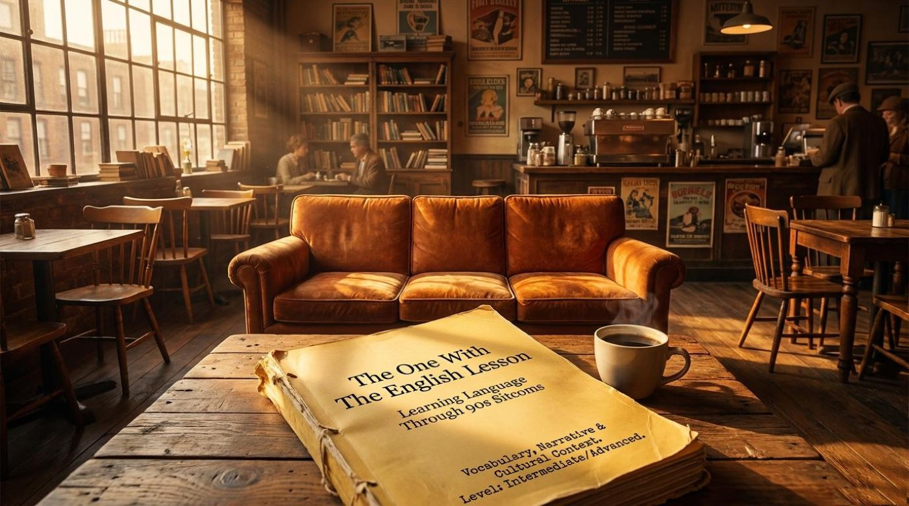
The deck opens with its premise, and it reads like a thesis statement: "Six friends navigating urban life, love, and careers in New York City." It adds that the show was "filmed over ten years, allowing the characters to grow alongside the audience," and calls it "a cultural benchmark combining light-hearted humor with deep, relatable relationship struggles." For a language learner, that combination matters more than it seems. Ten years of episodes means thousands of everyday situations — coffee shops, job interviews, weddings, breakups — spoken in natural, conversational English.
The educational value is baked into the format. A situation comedy, as the deck defines it later, is "a television series that involves a continuing cast of characters in a succession of comedic circumstances" — in other words, the same faces return every week, which means the same voices, speech rhythms, and running jokes return too. Repetition is exactly what vocabulary memory needs. It should be noted that the deck sets its level honestly: Intermediate/Advanced learners get real language, not simplified textbook phrases.
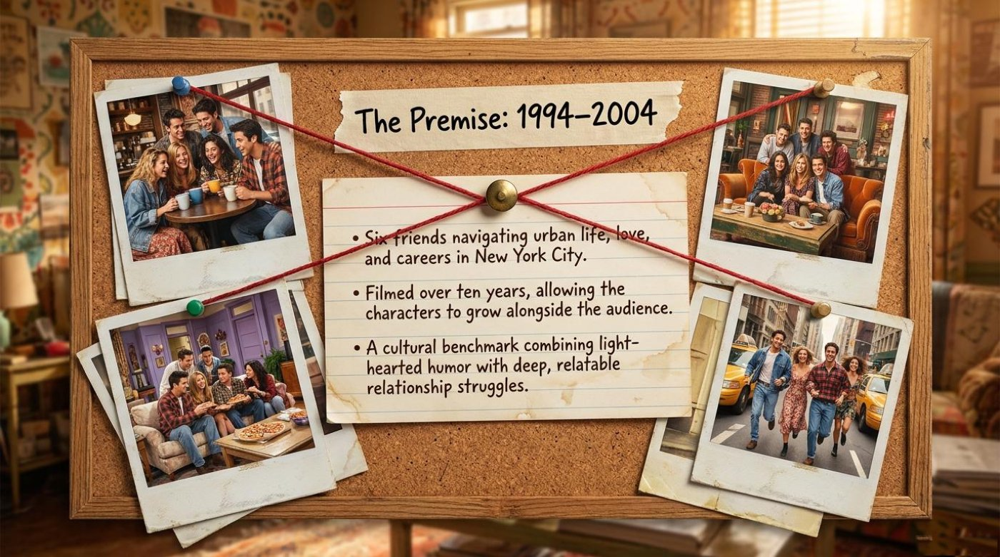
The lesson builds its character analysis around a contrast every storyteller knows. Joey is presented as "The 'Flat' Character," and the deck gives him three defining adjectives. LOYAL means "showing firm and constant support," and the deck adds the parenthetical (He fiercely protects his friends). CHILDLIKE means "having the good qualities associated with a child," glossed as (He is soft and naive). The third adjective is the technical one: STATIC — "lacking in movement, action, or change" — because, as the deck explains, "his core personality never fundamentally alters, providing comfort and humor."
The deck's takeaway on Joey deserves quoting in full: "In sitcoms, a 'flat' character is essential. Their unchanging nature creates reliable, repetitive humor episode after episode." A real example from the material shows the point: Joey's fierce protectiveness and soft-hearted naivety are identical in every season, and that predictability is precisely what makes the audience laugh on cue. The lesson for writers — and for English learners practicing description — is that consistency is a feature, not a flaw.
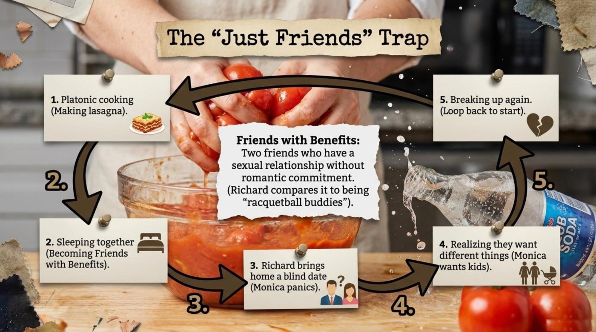
Rachel is the opposite case, introduced as "The 'Dynamic' Character." She begins the series PAMPERED — "treated with extreme or excessive care" — with the deck's telling note (A rich girl craving stability), and she grows into SOPHISTICATED, meaning "having a great deal of worldly experience," and INDEPENDENT, meaning "free from outside control." The deck's takeaway: "A 'dynamic' character drives the narrative forward. Rachel represents the value of trying, failing, and changing the direction of your life in your twenties." Her trajectory gives the show its longest story arcs and gives learners a ready-made set of adjectives for describing personal growth.
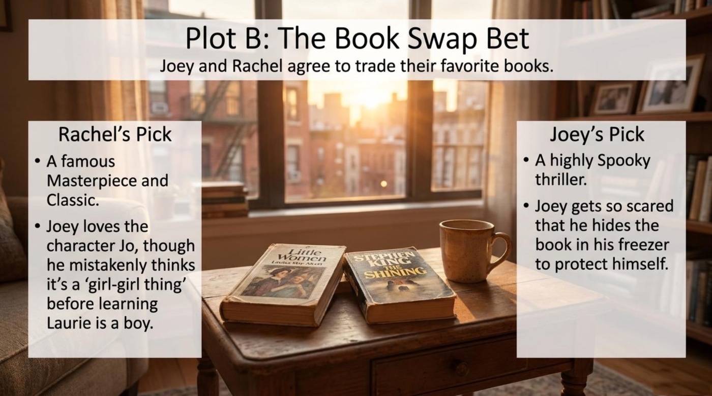
The deck then compresses both profiles into a single comparative matrix, and the wording is worth copying into a notebook. Rachel appears as Dynamic / Evolving with the core motivation "Seeking true independence," the key adjectives "Pampered, Sophisticated, Brave," and the narrative function "Drives long-term story arcs." Joey appears as Flat / Static with the core motivation "Protecting his 'found family'," the key adjectives "Childlike, Loyal, Naive," and the narrative function "Delivers consistent, reliable comedy." Remember that a so-called flat character still carries emotional weight: Joey's loyalty anchors the group even in episodes where the plot belongs entirely to Rachel.
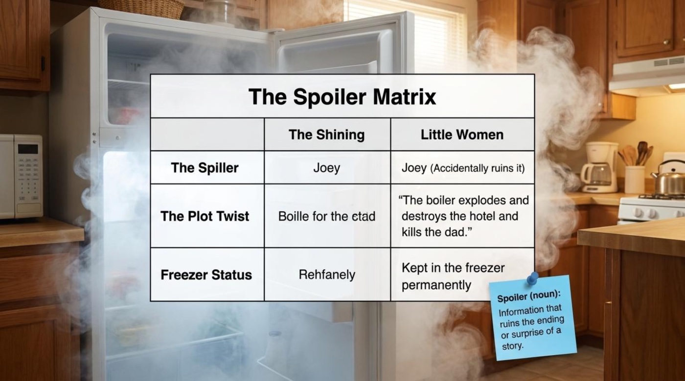
A short section titled Storytelling 101: The Basics arms the reader with four precise definitions. Narrative is "a spoken or written account of connected events; a story." Plot is "the main events of a play, novel, or movie, devised and presented by the writer as an interrelated sequence." Protagonist is "the leading character or one of the major characters in a drama, movie, or novel." And a sitcom, short for situation comedy, is "a television series that involves a continuing cast of characters in a succession of comedic circumstances." These four words unlock almost every film review and story summary in English.
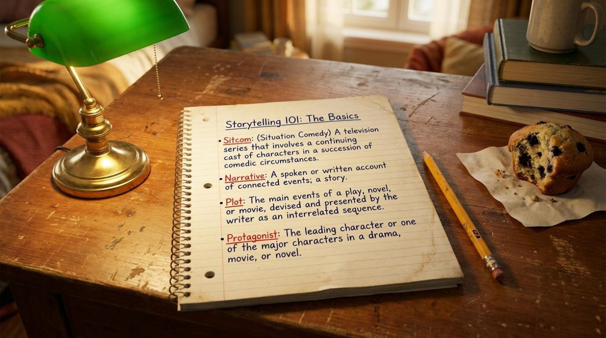
The architecture lesson is the heart of the deck. It presents the classic episode structure as a circular diagram with three stages. The status quo is "the normal, everyday situation." The disruption is "an event that ruins the normal situation" — and the deck's example is instant classic material: "Rachel runs away from her wedding." The restoration is "the conflict is resolved, and a new normal begins," illustrated by the line "Friends welcome Rachel to the real world." The deck explains the appeal in one sentence: "This structure makes stories easy to understand, allowing audiences to relax and enjoy the humor without heavy effort."
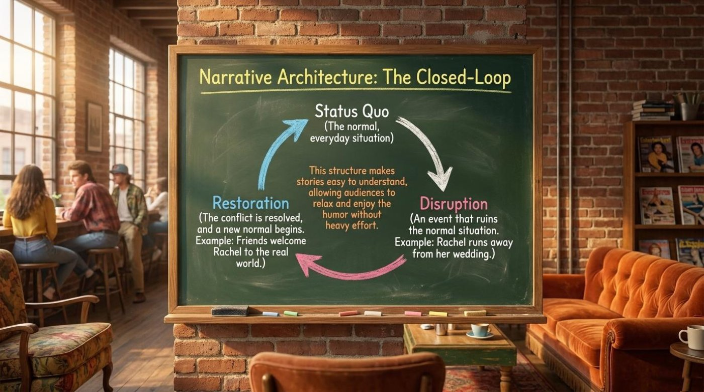
It should be noted that this closed-loop diagram is also a listening strategy. The moment a viewer can name the status quo, spotting the disruption becomes a game, and predicting the restoration becomes a reward. Practical advice: after any episode, retell it in exactly three sentences — one per stage. The exercise forces narrative vocabulary, past tenses, and sequencing words into a single tight paragraph.
The deck also dissects a more sophisticated technique it calls Narrative Architecture: The Multi-Clue Story. One episode runs three storylines at once: "Chandler & Joey (Argument over moving out and money)," "Rachel & Monica (Argument over living together and past frustrations)," and "Ross (Avoiding moving duties by hiding)." The diagram shows the three threads weaving across a map of New York until the moment of convergence: "All three separate storylines crash together in the same time and space." The takeaway on the sticky note: "This cross-narrative technique creates a 'perfect' pacing effect, packing massive entertainment into a 22-minute timeframe."
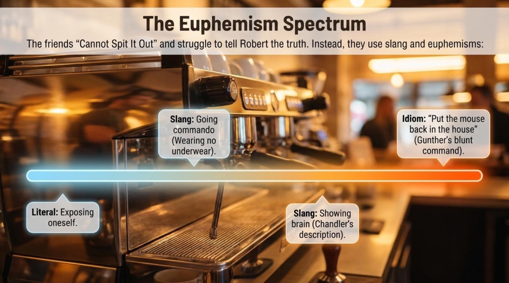
For learners, the multi-clue structure is a golden exercise in connectors. The words meanwhile, back at the apartment, and at the same time are the glue that holds parallel stories together, and few shows demonstrate them better. Pay attention to how often an episode cuts between storylines right on a punchline; that rhythm is the "perfect pacing" the deck praises, and hearing it weekly trains an instinct for spoken rhythm in English.
The deck closes its theory section with a script study, and the file name of the material — friends-313 — points to the exact episode: season three, episode thirteen, The One Where Monica and Richard Are Just Friends. The context is stated plainly: "Monica and Richard are ex-lovers who broke up because Monica wanted children and Richard did not." The scene: "Six months after breaking up, they bump into each other at a video rental store. They decide to try hanging out as 'just friends' and go back to Monica's apartment to make lasagna." The dramatic question the deck poses is the one the whole episode hangs on: "Can two people who used to be in love really be just friends?"
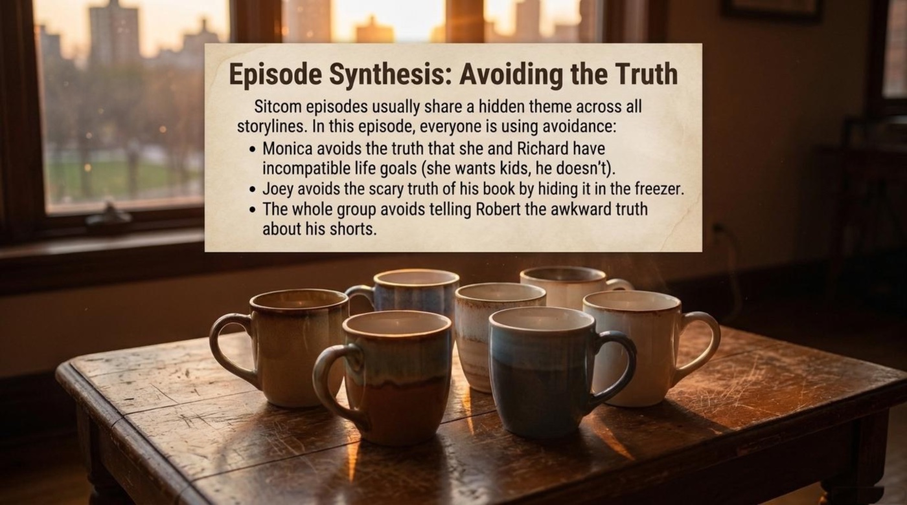
This scene is a gift for learners because the dialogue does two jobs at once. It teaches relationship vocabulary in the most authentic possible setting, and it demonstrates how people soften refusals, dodge direct answers, and walk away with dignity — the real mechanics of English conversation. The next section quotes the full exchange and takes the vocabulary apart word by word.
The deck teaches vocabulary in themed clusters, and the first cluster is the most surprising: color. Under the heading Visual Vocabulary: Expressing Mood Through Color, it pairs four adjectives with the show's design choices. UNCONVENTIONAL — "not based on or conforming to what is generally done or believed" — is illustrated with Phoebe's colorful, exaggerated dresses. SUBTLE — "delicately complex and understated" — appears in Monica's purple walls and bright decorations. MONOTONOUS means "lacking in variety and interest; dull." SUBDUED means "quiet and rather reflective or depressed," exemplified by Ross's typical academic wardrobe.
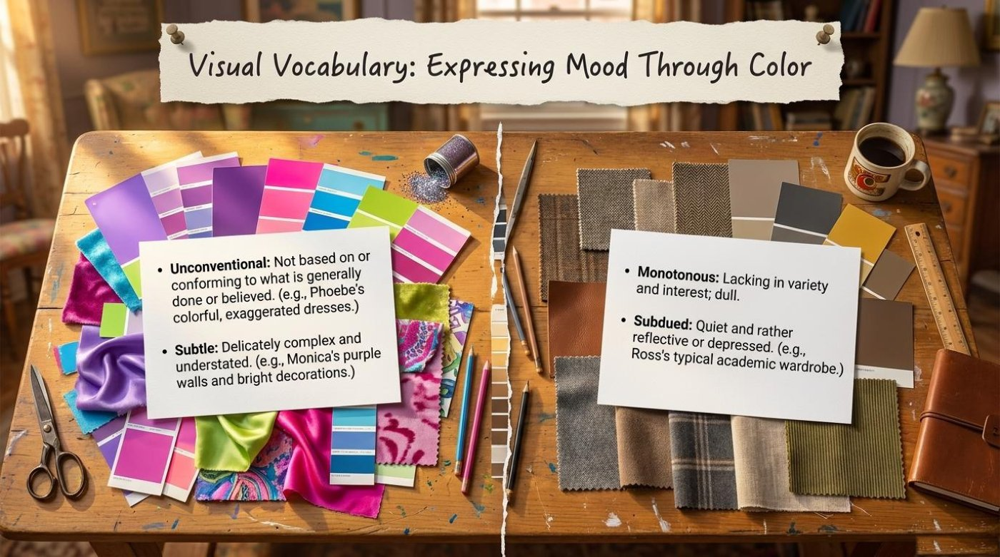
The method here is worth imitating. The deck attaches every abstract adjective to something visible — a dress, a wall, a wardrobe — because the brain stores words better when they arrive with a picture. Practical advice: when you learn a new descriptive adjective, assign it to a real object or person you see every day; the word subdued will stick forever once it belongs to a beige cardigan hanging in your closet.
The second cluster is the emotional one. Under Relationship Idioms, the deck defines four expressions that dominate the show's storylines and modern dating conversation alike. GETTING OVER SOMEONE means "to recover from a breakup and stop being emotionally attached to an ex-partner." PLATONIC describes "a relationship that is purely spiritual and affectionate, not physical or romantic." A BLIND DATE is "a social engagement or date with someone one has not previously met." And EXCLUSIVE refers to "a romantic relationship where both people agree not to date anyone else."
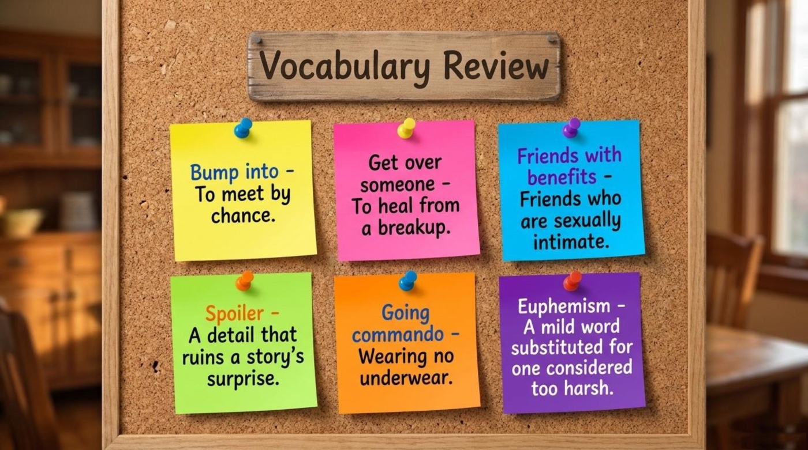
The deck's Dialogue Breakdown page presents the lasagna scene in Monica's apartment, quoted exactly as the material gives it:
MONICA: Y'know what, what if we're friends who don't see other people?
RICHARD: You mean like exclusive friends?
MONICA: Why not?! […]
RICHARD: Honey, I would love to do all that, but nothing's changed. […] We still want different things and we know how this is gonna end.
MONICA: Y'know what, I've got to walk out of here right now, 'cause getting over you is the hardest thing that I have ever had to do.
— Dialogue Breakdown, quoted from the lesson deck
The deck adds two margin notes, and both are small masterclasses in reading between the lines. The first: "Notice how Monica invents the term 'exclusive friends' to avoid admitting she wants to be a couple again." The second: "Richard uses logic to break the closed-loop." Language learners should notice three things in these lines. The phrase we still want different things is a gentle, universal formula for ending a relationship without blame. The expression I've got to walk out of here right now shows how English handles urgent exits while staying polite. And the final sentence stacks a phrasal verb with a superlative structure into one devastatingly useful pattern.
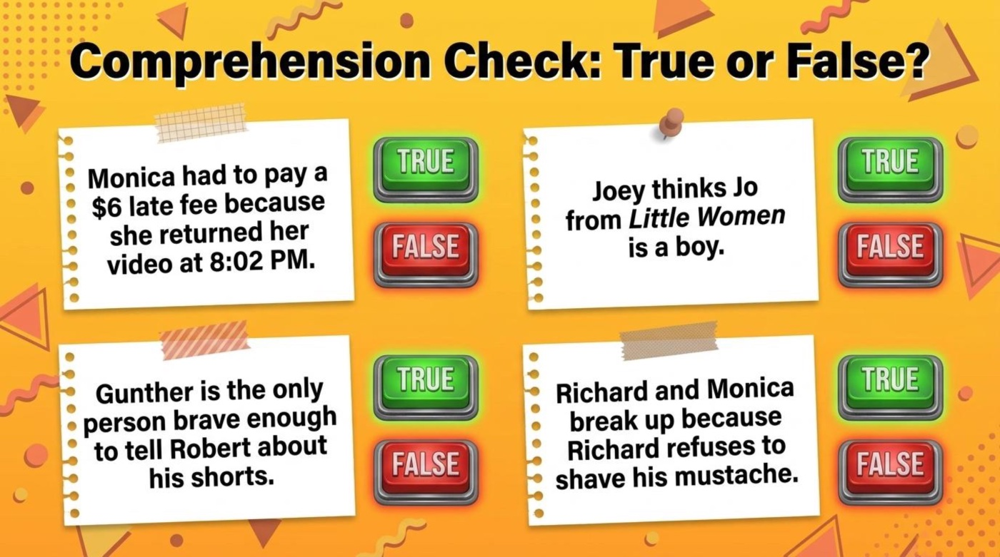
The following list unpacks ten key items from the material in plain text. Each entry gives the literal meaning, the contextual meaning, an example straight from the lesson, and the way the deck itself explains the word. ⚠️ Remember that several of these words carry more than one meaning in everyday English, and the situational meaning is the one worth memorizing first.
Part of speech: noun (from Latin, "the state in which")
Literal meaning: the existing state of affairs; the way things currently are.
Contextual meaning: the calm, comfortable equilibrium an episode opens with, before anything goes wrong.
From the material: "Status Quo (The normal, everyday situation)" — the deck places the term at the top of its circular story diagram, where every loop begins.
How the material explains it: the deck gives a deliberately plain gloss — the normal, everyday situation — which proves that even Latin phrases can be pinned to ordinary life.
Part of speech: noun (from Latin disrumpere, "to break apart")
Literal meaning: a forcible break or interruption of continuity.
Contextual meaning: the engine of a plot — the single event that ruins the normal situation and forces the characters to react.
From the material: "Disruption: An event that ruins the normal situation. Example: Rachel runs away from her wedding." — a bride sprinting out of her own ceremony is about as disruptive as television gets.
How the material explains it: the deck pairs the abstract definition with a concrete scene, so the word arrives pre-attached to an image.
Part of speech: noun
Literal meaning: the act of returning something to a former condition.
Contextual meaning: the closing stage of the story loop, where the conflict is resolved and life settles into a new pattern.
From the material: "Restoration: The conflict is resolved, and a new normal begins. Example: Friends welcome Rachel to the real world."
How the material explains it: the deck stresses that the old normal is not simply restored — a new normal begins, which is why the character can grow while the structure stays circular.
Part of speech: noun (from Latin convergere, "to incline together")
Literal meaning: the act of separate things moving toward the same point.
Contextual meaning: the moment in an episode when parallel storylines crash into each other and combine.
From the material: "Convergence: All three separate storylines crash together in the same time and space."
How the material explains it: the deck draws the three storylines as colored routes on a subway map, so convergence literally looks like trains arriving at one station.
Part of speech: adjective
Literal meaning: treated with extreme or excessive care; indulged in every comfort.
Contextual meaning: Rachel's starting condition — a sheltered rich girl who has never paid her own way.
From the material: "Pampered: Treated with extreme or excessive care. (A rich girl craving stability.)"
How the material explains it: the parenthetical note turns the word into a character thesis: pampering created the very instability Rachel spends ten years fixing.
Part of speech: adjective (compare the noun statikē, Greek for "the art of weighing")
Literal meaning: lacking in movement, action, or change; at rest.
Contextual meaning: describing a character whose core personality never fundamentally alters across a whole series.
From the material: "Static: Lacking in movement, action, or change. (His core personality never fundamentally alters, providing comfort and humor.)"
How the material explains it: the deck borrows a physics word and converts it into a tool of literary analysis — a move worth copying in your own essays.
Part of speech: adjective (from the verb subdue, "to bring under control")
Literal meaning: quiet, softened, held back.
Contextual meaning: muted colors and low moods — the visual signature of a reflective or depressed state.
From the material: "Subdued: Quiet and rather reflective or depressed. (e.g., Ross's typical academic wardrobe.)"
How the material explains it: the deck anchors the feeling to fabric — tweed, brown, beige — turning an emotional adjective into something you can literally see on screen.
Part of speech: phrasal verb (get over + person)
Literal meaning: get over alone means to climb across or clear an obstacle.
Contextual meaning: to recover from a breakup and gradually release emotional attachment to an ex-partner.
From the material: Monica's line, "getting over you is the hardest thing that I have ever had to do" — the deck circles the phrase in red as the emotional peak of the scene.
How the material explains it: the definition reads, "To recover from a breakup and stop being emotionally attached to an ex-partner," and the dialogue supplies the perfect usage model.
Part of speech: adjective (from the philosopher Plato)
Literal meaning: connected with Platonic philosophy — love directed at ideas and the soul rather than the body.
Contextual meaning: affection between two people that involves no romance or physical intimacy — the state Monica and Richard attempt and fail to sustain.
From the material: "Platonic: A relationship that is purely spiritual and affectionate, not physical or romantic." The whole episode tests whether that definition can survive real history between two people.
How the material explains it: the deck frames the word as the stakes of the script study, so the vocabulary and the plot reinforce each other.
Part of speech: adjective (from Latin excludere, "to shut out")
Literal meaning: excluding or shutting out alternatives; restricted to a select group.
Contextual meaning: agreeing to date only each other — the romantic status Monica tries to smuggle into a friendship.
From the material: Richard asks, "You mean like exclusive friends?" — and the joke lands because exclusive normally signals romance, exactly what Monica refuses to admit she wants.
How the material explains it: the deck defines it as "a romantic relationship where both people agree not to date anyone else" and notes that Monica invented the hybrid term to hide her real wish.
The five most useful terms of the lesson are collected on the flip-cards below. Tap any card — or focus it with Tab and press Enter — to turn it over; the second side holds the literal meaning, the contextual meaning, an example from the material, and a short note on why the word matters. 💡 The button underneath turns the whole set at once.
Beyond vocabulary and structure, the material carries a set of larger ideas, and each one rewards a closer look. Four of them — the loop, the door, the palette, and the family — quietly hold the whole lesson together.
The most important metaphor in the deck is structural. A story that leaves the normal, breaks it, and returns to a new normal is really making a promise: order will come back. The material states the effect twice. In its architecture section: "This structure makes stories easy to understand, allowing audiences to relax and enjoy the humor without heavy effort." And in its final message: "Through closed-loop narratives, they offer us comfort in a chaotic world." The circle on the chalkboard diagram is therefore more than a plot device; it is the emotional contract between a sitcom and its audience. Notice that the deck's own margin notes borrow the metaphor — Richard's honest refusal in the lasagna scene is described as logic that breaks the closed-loop.
The deck's final image is a purple door with a small yellow frame around the peephole — one of the most recognizable objects in television history. The frame is where characters knock, linger, peek, and enter; it is the threshold of the apartment where every storyline converges. By placing its last words beside that door, the material turns the set itself into a symbol of home and belonging — the restoration that waits at the end of every loop. The message next to the frame begins with the line that summarizes the entire deck: "We don't just watch sitcoms for the jokes."
The split desk of paint swatches and fabric samples is a quiet metaphor of its own. On one side, vivid purples and pinks stand for Phoebe's unconventional energy; on the other, muted tweeds and browns stand for Ross's subdued academic world. The deck's interpretation is explicit: color expresses mood, so the wardrobe department speaks a language alongside the script. The idea generalizes beautifully into English — adjectives like subtle, monotonous, and subdued are not just design criticism; they are everyday words for feelings, rooms, music, and people. Once you hear color as vocabulary, you notice it in every costume choice on screen.
The fourth key idea hides in two words of the character matrix: Joey's core motivation is "Protecting his found family." A found family is a group of people who are not related by blood but behave like relatives — the exact social invention that makes Friends work. The premise page of the deck says the same thing from the other direction: "Six friends navigating urban life, love, and careers in New York City." The term itself is a modern English expression worth adopting, because it names an experience many adults recognize: building a support network out of choice rather than birth. It also explains the deep relatability the deck credits to the show as "a cultural benchmark combining light-hearted humor with deep, relatable relationship struggles."
The material ends with its own two-part comprehension check — a set of true-or-false statements and a trio of open discussion cards — and the version below turns them into an interactive quiz. Eight questions wait behind the buttons, mixing true-or-false statements, vocabulary in context, and a fill-in-the-blank built from Monica's most quoted line. Each answer receives instant feedback: the correct option glows green, a wrong choice shakes and glows red, and a short explanation appears under the question. The score counter and the row of dots track every step, and the panel at the end offers a full reset. 📌 Read each option carefully before clicking; half of the wrong answers are clever.
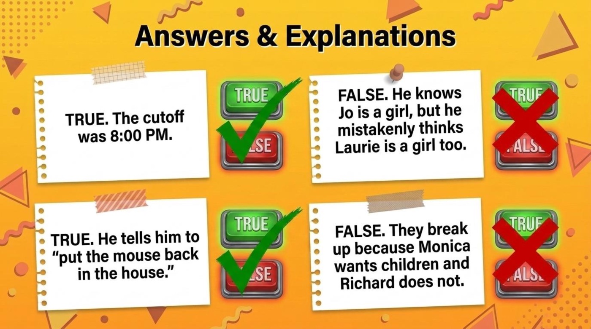
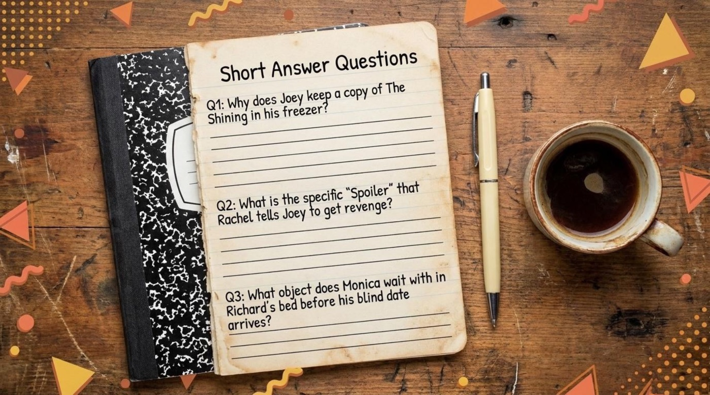
The deck closes on a purple doorway with a message that reads like a manifesto, and it deserves to be quoted in full: "We don't just watch sitcoms for the jokes. Through closed-loop narratives, they offer us comfort in a chaotic world. Through dynamic characters like Rachel, they show us that it is never too late to change. And by studying their dialogue, we learn the authentic, beautiful, and sometimes messy language of real human connection."
The main takeaway for language learners follows directly from that final page. A sitcom watched deliberately — with the status quo named, the disruption spotted, the vocabulary collected, and the dialogue replayed — is one of the richest free classrooms available, and it never cancels a lesson. The call to action is simple: pick one episode this week, watch it once with subtitles and once without, retell it in three sentences using the closed-loop terms, and carry one new phrase — getting over someone, platonic, or exclusive friends — into a real conversation. The material ends with a stamp that says Class dismissed, and the homework, conveniently, is television.
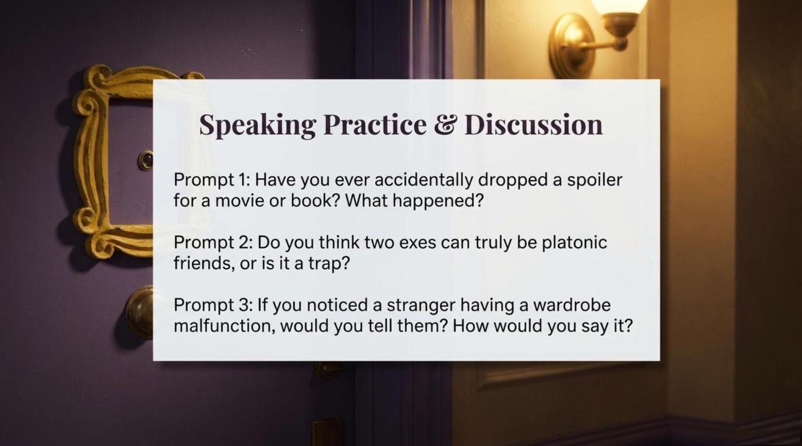
The complete source material accompanies this article as a PDF. Opening it requires nothing more than a click.